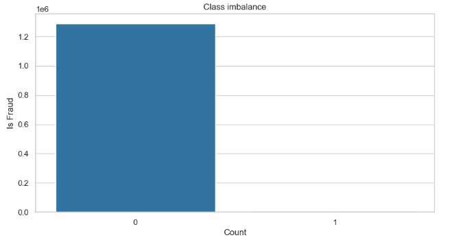
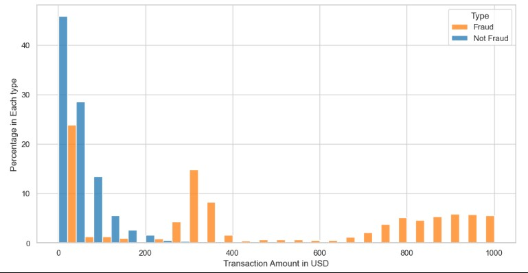
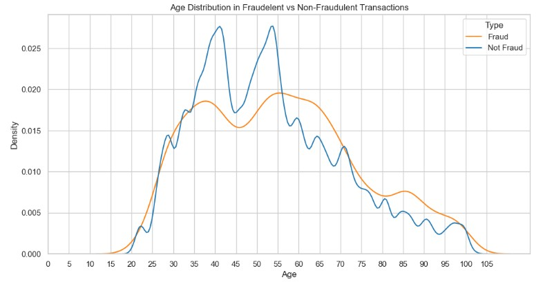
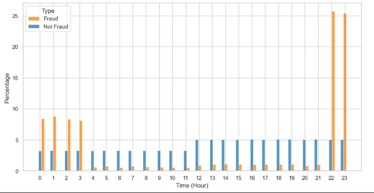

PROJECT SNAPSHOT
Business Goal: Develop an automated fraud detection system capable of identifying suspicious credit card transactions while minimizing false alarms for legitimate customers.
Dataset: 1,296,675 simulated credit card transactions, with fraud representing only 0.58% of total transactions.
Key Result: Compared Logistic Regression, Random Forest, and XGBoost models, with XGBoost achieving the strongest overall performance with a ROC-AUC of 0.992.
Tech Stack: Python, Pandas, NumPy, Scikit-Learn, XGBoost, imbalanced-learn, Matplotlib, Seaborn.
I. Business Problem
Financial institutions must detect fraudulent transactions in real time while operating on highly imbalanced datasets. Fraud represents a very small fraction of total transactions, making accurate detection both critical and challenging. The objective of this project was to build a classification system that maximizes fraud detection (recall) while minimizing false positives that impact legitimate customers.
II. Data Overview & Exploratory Data Analysis
- Dataset: Simulated credit card transactions covering 1,000 customers and 800 merchants from 2019–2020.
- Class Imbalance: Only 0.58% of transactions were fraudulent, creating a severe imbalance challenge.
- Key Insight: Fraudulent transactions showed distinct spending patterns, including peaks around $50 and $300, differing from legitimate transaction behaviour.
- Key Insight: The age distribution differs between legitimate and fraudulent transactions. Legitimate transactions show two distinct peaks among customers aged 35–40 and 50–55, while the fraud distribution is smoother and more evenly spread across older age groups. This suggests that older customers may be relatively more represented in fraudulent transactions, warranting further investigation during feature engineering and modelling.
- Key Insight: Most fraudulent transactions occur during nighttime hours. From 10 p.m. to 3 a.m., a suspicious pattern is observed, as most customers are typically asleep during these hours. Non-fraudulent transactions are evenly distributed across all hours of the day.




III. Methodology & Technical Approach
The modelling pipeline was designed to transform raw transaction data into predictive features and evaluate multiple machine learning approaches under a class-imbalanced setting.
- Feature Engineering: Extracted temporal features (hour, day, month) and derived customer age from birthdate. Categorical variables were encoded using one-hot encoding.
- Class Imbalance Handling: Applied SMOTE to generate synthetic fraud examples in the training set, improving model sensitivity to minority class patterns.
- Models Evaluated:
- Logistic Regression: Baseline linear model for comparison.
- Random Forest: Captured non-linear relationships in transaction behaviour.
- XGBoost: Gradient boosting model optimized for high predictive performance.
IV. Results & Model Comparison
- Logistic Regression: ROC-AUC = 0.84 (baseline performance).
- Random Forest: ROC-AUC = 0.99 (strong non-linear performance).
- XGBoost: ROC-AUC = 0.992 (best overall performance and stability).
While all tree-based models performed strongly, XGBoost provided the best balance between precision and recall, making it the most suitable candidate for real-world deployment scenarios.
V. Model Selection Rationale
XGBoost was selected as the preferred model due to its superior ability to handle complex feature interactions and its robustness under severe class imbalance conditions. Although Random Forest achieved similar performance, XGBoost demonstrated more stable results across evaluation metrics.
VI. Business Impact
- Risk Reduction: Improved fraud detection reduces direct financial losses by identifying suspicious transactions earlier.
- Operational Efficiency: Lower false-positive rates reduce workload for fraud investigation teams.
- Customer Experience: Minimizing incorrect transaction blocks improves customer trust and satisfaction.
- Scalability: The pipeline can be extended to real-time fraud monitoring systems in high-volume financial environments.
VII. Key Takeaways
- Built an end-to-end fraud detection pipeline for highly imbalanced data.
- Applied SMOTE to improve minority class learning.
- Compared multiple machine learning models using ROC-AUC as primary metric.
- Identified XGBoost as the most effective model for deployment scenarios.
VIII. Full Implementation
Full code, preprocessing steps, and model training are available in the GitHub repository.
View Full Project on GitHub